전자산업기사 (2013-06-02 기출문제)
1과목: 전자회로
1. 다음 중 피어스 수정발진회로의 발진주파수 변동 요인으로 가장 적합하지 않은 것은?
- 부하의 변동
- 주위 온도의 변화
- 발진회로의 차폐
- 전원 전압의 변동
(정답률: 87%)

2. 다음 그림에서 트랜지스터의 작용으로 가장 적합한 것은?
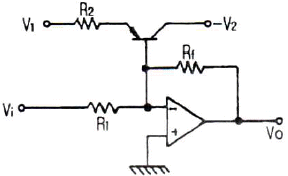
- 증폭용
- 발진용
- 전압검출용
- 온도보상용
(정답률: 75%)
3. 증폭기의 동작점에 의한 분류는 어떠한 조건으로 결정하는 것이 가장 적합한가?
- 유통각
- 출력전압 크기
- 입력신호의 위상
- 입력신호의 진폭
(정답률: 71%)
4. 전원회로에서 전압안정계수란? (단, VL=직류출력전압, VS=신호원전압, T=주위온도, IL=부하전류이다.)
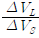
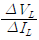
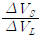
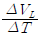
(정답률: 77%)
5. 그림과 같은 연산증폭기에서 V1=1[V], V2=2[V], V3=3[V]일 때, 출력 전압 Vo은 몇 [V]인가?
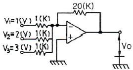
- 20
- 60
- -120
- -180
(정답률: 86%)
6. 트랜지스터의 정특성에서 VCE=5[V]일 때, IB를 200[μA]에서 300[μA]까지 변화시켜 VBE가 0.2[V]에서 0.5[V]로 변화되었다면 이 트랜지스터의 hie는?
- 300[Ω]
- 600[Ω]
- 3[kΩ]
- 6[kΩ]
(정답률: 67%)
7. 진폭 변조(AM)에서 반송파 진폭이 20[V]이다. 30[V]의 진폭을 가지는 신호파를 인가한 경우 변조도는?
- 0.66
- 50
- 10
- 1.5
(정답률: 66%)
8. 멀티바이브레이터의 단안정, 무안정, 쌍안정의 결정은?
- 결합 회로의 구성에 따라 결정된다.
- 전원 전압의 크기에 따라 결정된다.
- 전원 전류의 크기에 따라 결정된다.
- 바이어스 전압의 크기에 따라 결정된다.
(정답률: 84%)
9. 궤환 증폭기에서 무궤환시의 전압 이득이 50이고, 저역 3[dB] 차단주파수가 20[Hz]일 때, 궤환시 전압 이득이 40이면 궤환시 저역 3[dB] 차단주파수는 몇 [Hz]인가?(오류 신고가 접수된 문제입니다. 반드시 정답과 해설을 확인하시기 바랍니다.)
- 8[Hz]
- 16[Hz]
- 20[Hz]
- 25[Hz]
(정답률: 55%)
10. 다음 중 트랜지스터 증폭기 설계 시 동작점(Q점) 결정에 가장 영향이 적은 것은?
- 왜곡
- 주파수 특성
- 최대정격
- 입력신호의 크기
(정답률: 54%)
11. LC 발진기에서 일어나기 쉬운 이상 현상이 아닌 것은?
- 간헐(Blocking) 발진
- 인입 현상
- 자왜(磁歪) 현상
- 기생 진동
(정답률: 65%)
12. 위상변조(PM)를 등가의 주파수변조(FM)로 대치하기 위하여 사용하는 것은?
- Pre-Emphasis
- De-Emphasis
- 평형변조기(Balanced Modulator)
- 전치보상기(Pre-Distorter)
(정답률: 63%)
13. 다음 중 직렬 전압 부궤환 회로의 특징으로 적합하지 않은 것은?
- 전압 이득이 감소
- 주파수 대역폭의 증가
- 비직선 일그러짐의 감소
- 입력 및 출력 임피던스의 증가
(정답률: 80%)
14. 이상적인 연산증폭기의 파라미터 값이 0인 것은?
- 입력 임피던스
- 출력 임피던스
- 전압 이득
- 대역폭
(정답률: 74%)
15. 다음 그림은 반전연산증폭회로이다. V1=3[V], V2=4[V]일 때 VO는 몇 [V]인가?
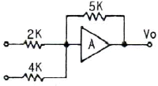
- 12.5
- 15.5
- -12.5
- -15.5
(정답률: 78%)
16. 트랜지스터에서 전류증폭률이 불균일하므로, 안정된 출력전압을 얻기 위한 가장 적합한 방법은?
- 이미터 회로에 다이오드를 연결한다.
- 서미스터를 베이스와 이미터에 넣는다.
- 트랜지스터에서 증폭된 것을 한번 더 증폭한다.
- 이미터 단자와 접지사이에 저항을 삽입한다.
(정답률: 77%)
17. 다음과 같은 정류기는 어느 점에 교류 입력을 연결하여야 하는가?
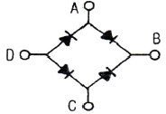
- A - C 점
- A - D 점
- B - C점
- B - D 점
(정답률: 82%)
18. 다음 중 부궤환 증폭기의 특징에 대한 설명으로 적합하지 않은 것은?
- 이득이 감소한다.
- 잡음이 감소한다.
- 주파수 대역폭이 증가한다.
- 입ㆍ출력 임피던스 값의 변화가 없다.
(정답률: 81%)
19. 다음의 접합형 FET 회로에서 드레인 전류 ID=4[mA]일 때 드레인-소스 전압 VDS는 몇 [V]인가?
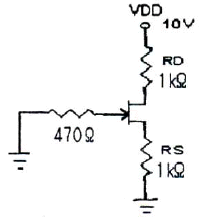
- 1[V]
- 2[V]
- 3[V]
- 4[V]
(정답률: 74%)
20. 다음 회로에 그림과 같은 입력 파형을 인가했을 때 출력 파형은?
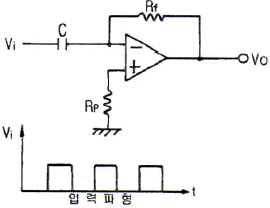
- 삼각파
- 정현파
- 임펄스파
- 스텝파
(정답률: 68%)
2과목: 전기자기학 및 회로이론
21. 벡터 A, B의 값이 A = i+2j+3k, B = -i+2j+k 일 때 AㆍB의 크기는?
- 2
- 4
- 6
- 8
(정답률: 61%)
22. 유전율 ε0인 진공 내를 전자파가 전파할 때 진공중의 투자율은 약 몇 [H/m]인가?
- 9.56×10-7
- 12.56×10-7
- 15.56×10-7
- 18.56×10-7
(정답률: 66%)
23. 동심구에서 내부도체의 반지름이 a, 절연체의 반지름이 b, 외부도체의 반지름이 c일 때, 내부도체에만 전하 Q를 주었을 때 내부도체의 전위는? (단, 절연체의 유전율은 ε0이다.)
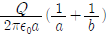
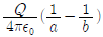
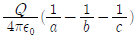
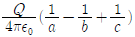
(정답률: 72%)
24. 권수 500회의 코일 내를 통하는 자속이 그림과 같이 변화하고 있다.
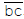
의 시간 내에 코일의 단자간에 생기는 유기기전력은 몇 [V]인가?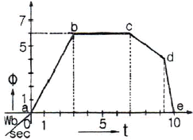
- 0
- 0.7
- 1.4
- 2.8
(정답률: 66%)
25. 지름 10[cm]인 원형코일 중심에서의 자계가 1000[A/m]이다. 원형코일이 100회 감겨있을 때 전류는 몇 [A]인가?(오류 신고가 접수된 문제입니다. 반드시 정답과 해설을 확인하시기 바랍니다.)
- 1[A]
- 2[A]
- 3[A]
- 5[A]
(정답률: 67%)
26. 그림과 같이 공극의 면적이 100[cm2]인 전자석의 자속밀도가 0.5[Wb/m2]인 철편을 흡입하는 힘은 약 몇 [N]인가?
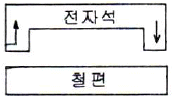
- 1000
- 2000
- 3000
- 4000
(정답률: 70%)
27. 접지 도체구와 점전하간에 작용하는 힘은?
- 항상 반발력이다.
- 조건적 반발력이다.
- 항상 흡입력이다.
- 조건적 흡입력이다.
(정답률: 75%)
28. 정전계에서 전기력선의 성질을 설명한 것 중 잘못된 것은?
- 한 점에서 전기력선의 방향은 그 점의 전계방향과 같다.
- 전계가 0이 아닌 곳에서 전기력선은 도체표면에 수직이다.
- 전기력선은 전위가 낮은 점에서 높은 점으로 향한다.
- 전기력선의 밀도는 그 점에서의 전계의 크기와 같다.
(정답률: 72%)
29. 공기 중 두 점전하 사이에 작용하는 힘이 10[N]이었다. 두 전하 사이에 유전체를 넣었더니 힘이 2[N]으로 되었다면 유전체의 비유전율은?
- 2.5
- 5
- 10
- 15
(정답률: 81%)
30. 물질의 자화현상은?
- 전자의 이동
- 전자의 공전
- 분자의 운동
- 전자의 자전
(정답률: 62%)
31. (10+j5)/(2+j4)를 계산한 결과 값은?
- 2-j1.5
- 2+j1.5
- 5+j1.0
- 5-j1.0
(정답률: 51%)
32. 다음 중 파고율(crest factor)을 나타낸 것은?
- 최대값/평균값
- 실효값/평균값
- 실효값/최대값
- 최대값/실효값
(정답률: 63%)
33. 그림과 같은 회로가 정저항 회로가 되기 위한 C값은 몇 [μF]인가? (단, R=2[kΩ], L=4[H]이다.)
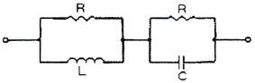
- 0.1
- 0.2
- 1
- 2
(정답률: 56%)
34. 그림과 같은 회로에서 I1과 I2의 위상차는? (단, R1=R2=X1=X2=1[Ω]이다.)
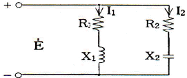
- 0°
- 45°
- 90°
- 1⑤°
(정답률: 62%)
35. 자기 인덕턴스 L1, L2가 각각 4[mH], 9[mH]인 두 코일이 이상결합(理想結合)되었다면 상호 인덕턴스 M은?
- 6[mH]
- 6.5[mH]
- 9[mH]
- 36[mH]
(정답률: 74%)
36. 공진 회로에 있어서 선택도 Q를 표시하는 옳은 식은? (단, RLC 직렬 공진 회로임)
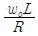
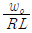
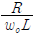
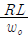
(정답률: 70%)
37. 100[μF]의 콘덴서에 200[V], 60[Hz]의 교류전압을 가할 때의 무효전력은 몇 [Var]인가?
- 60π[var]
- 120π[var]
- 240π[var]
- 480π[var]
(정답률: 43%)
38. 하이브리드 H 파라미터와 임피던스 및 어드미턴스 파라미터와의 관계로서 옳지 않은 것은?
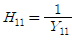
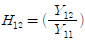
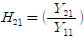
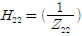
(정답률: 55%)
39. 이상적인 직류 전압원에 대한 설명 중 옳은 것은?
- 이 소자는 선형 V-i 특성을 갖는 시변 소자이다.
- 이 소자는 비선형 V-i 특성을 갖는 시변 소자이다.
- 이 소자는 선형 V-i 특성을 갖는 시불변 소자이다.
- 이 소자는 비선형 V-i 특성을 갖는 시불변 소자이다.
(정답률: 52%)
40. f(t) = cos ωt를 라플라스 변환하면?
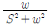
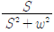
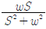
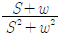
(정답률: 66%)
3과목: 전자계산기일반
41. 컴퓨터 내부의 클록 펄스는 초당 반복하는 펄스의 수로 표시된다. MHz는 펄스가 초당 몇 회 반복되는가?
- 104
- 105
- 106
- 107
(정답률: 85%)
42. 캐시 메모리(Cache Memory)의 설명으로 옳은 것은?
- CPU의 속도와 기억장치의 속도차를 늘이기 위한 기억장치이다.
- 캐시의 성능을 나타내는 척도를 적중률(hit ratio)이라 한다.
- 주로 DRAM으로 구성되어 있다.
- CPU와 보조기억장치의 정보교환을 위해 데이터를 임시 보관한다.
(정답률: 72%)
43. 다음 코드의 분류 중 그 연결이 옳은 것은?
- 자기보수코드 : 8421 코드
- 자기보수코드 : 2421 코드
- 가중치코드 : 3-초과 코드
- 가중치코드 : 그레이 코드
(정답률: 60%)
44. C 언어에서 출력함수 printf()의 확장문자에 대한 설명으로 옳은 것은?
- \n - new page - 커서를 다음 페이지 앞으로 이동
- \" - 이중 인용부호 - 이중 인용부호 입력
- \f - form feed - 한 페이지 넘김
- \b - binary - 이진 데이터 출력
(정답률: 66%)
45. "명령어 수행을 위해 중앙처리장치가 의미 있는 상태로 변환하도록 하는 동작"이란 내용이 의미하는 것은?
- Micro operation
- Fetch operation
- Execute operation
- Interrupt operation
(정답률: 52%)
46. Shift register에 있는 Binary 값 X가 6회 Shift right 된 후 X의 값은?
- X / 6
- X * 6
- X / 64
- X * 64
(정답률: 69%)
47. 프로그램의 서브루틴 호출과 복귀를 처리할 때 이용되는 것은?
- 스택
- 큐
- ROM
- 누산기
(정답률: 72%)
48. 0-주소 명령형식에만 해당하는 것은?
- POP
- ADD
- MOVE
- STORE
(정답률: 67%)
49. ALU 레지스터와 메모리 사이에서 데이터를 전송하기 위하여 오고가는 길은?
- control bus
- data bus
- address bus
- 외부 버스
(정답률: 78%)
50. 다음 중 폰 노이만(Von Neumann)형 컴퓨터의 특성이 아닌 것은?
- 주 기억장치의 구조가 일차원으로 구성되어 있다.
- 기본적으로 명령어를 수행하는 것이 순차적이다.
- 연산의 의미가 데이터에 있다.
- 프로그램 내장 방식이다.
(정답률: 65%)
51. 마이크로컴퓨터의 구성에서 memory-mapped I/O와 isolated I/O 방식에 대한 설명 중 옳은 것은?
- memory-mapped 입출력에는 입출력 전용 명령어가 필요없다.
- isolated 입출력은 버스 연결이 쉽다.
- memory-mapped 입출력은 주기억 공간을 최대로 활용할 수 있다.
- isolated 입출력은 프로그래밍에서 기억장치 관련 명령어들을 입출력장치 제어에도 사용이 가능하다.
(정답률: 52%)
52. 10진수 854.5를 16진수로 옳게 표현한 것은?
- 356.8
- 35B.8
- 356.5
- 35B.5
(정답률: 53%)
53. 일반적인 방법으로 전가산기를 설계했을 경우 포함되지 않는 게이트는?
- EX-OR
- AND
- OR
- NAND
(정답률: 67%)
54. 자료의 흐름을 중심으로 시스템 전체의 작업처리 내용을 종합적이고, 전체적인 상태로 도시한 순서도는?
- 시스템 순서도
- 프로그램 순서도
- 개략 순서도
- 상세 순서도
(정답률: 64%)
55. 다음 중 주소지정 방법에서 속도(speed)를 고려할 때 가장 빠른 것은?
- Calculated Address
- Immediate Address
- Direct Address
- Indirect Address
(정답률: 66%)
56. 다음 우선순위 인터럽트(interrupt)에 대한 설명으로 옳은 것은?
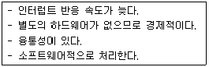
- 하드웨어 인터럽트
- 폴링 인터럽트
- 벡터 인터럽트
- 내부 인터럽트
(정답률: 70%)
57. 데이터를 마이크로프로세서를 거치지 않고 주변장치가 직접 메모리에 전송하는 방식은?
- DMA
- ALU
- MPU
- MDR
(정답률: 79%)
58. 다음 논리 함수를 간소환 한 결과는?
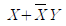
- X
- XY
- X+Y
- Y
(정답률: 71%)
59. 컴퓨터의 기억장치를 구성할 때 고려해야 할 주요 요소가 아닌 것은?
- 접근속도
- 채널수
- 전력소모량
- 기억용량
(정답률: 61%)
60. 컴퓨터와 오퍼레이터(operator) 사이에 필요한 정보를 주고받을 수 있는 장치는?
- 라인 프린터
- 연산 장치
- 콘솔
- 기억 장치
(정답률: 77%)
4과목: 전자계측
61. 그림과 같은 임피던스 브리지(Impedance Bridge)에서 LX의 값은?
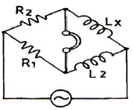
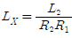
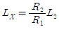
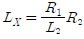
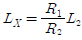
(정답률: 75%)
62. 다음은 무엇을 측정하는 블록도인가?
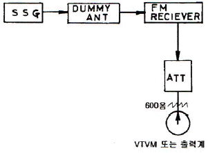
- FM 수신기의 잡음 측정
- FM 수신기의 선택도 측정
- FM 수신기의 감도 측정
- FM 수신기의 영상 신호대 잡음비 측정
(정답률: 53%)
63. TV의 영상중간 주파 증폭기의 특성곡선을 측정하기 위하여 필요없는 계측기는?
- Audio Generator
- Marker Generator
- Oscillo Scope
- Sweep Generator
(정답률: 66%)
64. 디지털 계측기의 장점을 설명한 것 중 가장 옳지 않은 것은?
- 정도가 높은 측정이 가능하다.
- 측정이 매우 쉽고, 신속히 이루어진다.
- 일반적으로 연속량을 측정할 수 있다.
- 측정값을 읽을 때 개인적 오차가 발생하지 않는다.
(정답률: 76%)
65. 전압계와 전류계를 다음과 같이 접속하여 전력을 측정하는 경우 전압계 내부 저항에 의한 전력분 만큼 소비전력이 증가한다. 저항 R에서의 참전력은 어떻게 표시되는가?
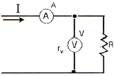
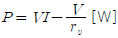
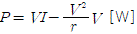
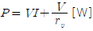
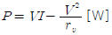
(정답률: 62%)
66. 다음은 측정용 발진기 구성도이다. 옳은 것은?
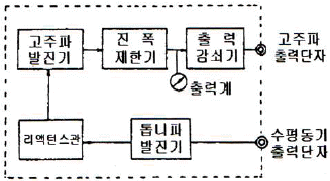
- 비트 발진기
- 소인 발진기
- 음차 발진기
- CR 발진기
(정답률: 72%)
67. 다음과 같은 브리지 회로가 평형이 되었다면 어느 식이 성립되는가?
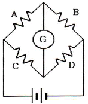
- AB = CD
- ABCD = 1
- AC = BD
- AD = BC
(정답률: 77%)
68. 전압 정재파 비가 3일 때 반사 계수는?
- 0.25
- 0.5
- 1.0
- 1.5
(정답률: 57%)
69. 헤테로다인 주파수계에서 Single beat 법보다 Double beat 법이 좋은 이유는?
- 구조가 간단하다.
- 취급이 용이하다.
- 측정 범위가 넓다.
- 오차가 적다.
(정답률: 63%)
70. 열전대형 계기를 설명한 것 옳지 않은 것은?
- 과전류에 매우 강하다.
- 재료에는 구리-콘스탄탄 등이 있다.
- 열기전력은 전류의 제곱에 비례하므로 제곱눈금이다.
- 열선의 임피던스가 낮고, 주파수에 대한 오차가 적다.
(정답률: 60%)
71. 오실로스코프에서 위상차를 측정한 결과 그림과 같은 리서쥬 도형이 나타났다. 다음 관계식 중 옳은 것은?
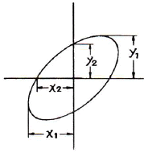
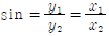
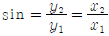
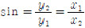
(정답률: 71%)
72. 오실로스코프로 전압을 측정한 결과 진폭이 5cm[p-p]의 크기로 나타났다. 이 전압의 실효값은? (단, 오실로스코프의 수직편향감도는 1[mm/V]이다.)
- 약 17.7[V]
- 약 19.5[V]
- 약 25[V]
- 약 50[V]
(정답률: 59%)
73. 다음 중 잡음지수 F는? (단, Si : 입력신호, Ni : 입력잡음, So : 출력신호, No : 출력잡음)
(정답률: 64%)
74. 측정 오차를 줄이는 방법으로 옳지 않은 것은?
- 전원은 일정 값으로 유지한다.
- 기기 및 회로의 임피던스를 정합시킨다.
- 측정은 여러 번 반복하여 평균치를 구한다.
- 측정기 다이얼 조작은 불규칙하게 여러 방향으로 한다.
(정답률: 77%)
75. 다음 중 가장 높은 주파수를 측정할 수 있는 것은?
- 딥 미터
- 진동편형 주파수계
- 흡수형 주파수계
- 동축형 주파수계
(정답률: 58%)
76. X-Y 플로터에 대한 설명으로 옳지 않은 것은?
- 아날로그 입력을 기록한다.
- 도안을 그리는데 널리 사용된다.
- 종이는 롤러에 의해서 앞으로 이동한다.
- 펜은 펄스에 의해 구동되는 스텝모터에 의해 수평으로 이동한다.
(정답률: 63%)
77. 다음 중 전해액이나 접지 저항을 측정할 때 교류를 사용하는 이유로 옳은 것은?
- 습기를 제거하기 위하여
- 전극 내부의 분극 작용을 방지하기 위하여
- 전극 표면의 분극 작용을 방지하기 위하여
- 접지 저항보다 작은 저항 값을 지시하는 것을 방지하기 위하여
(정답률: 69%)
78. 최대눈금 250[V]인 0.5급 전압계로 전압을 측정하였더니 지시가 100[V]이었다고 한다. 상대오차는?
- 1[%]
- 1.25[%]
- 2[%]
- 2.25[%]
(정답률: 74%)
79. 다음 기록계 중 편위법을 이용한 기록계는?
- X-Y 기록계
- 타점식 기록계
- 작동식 기록계
- 자동평형식 기록계
(정답률: 37%)
80. 오실로스코프로 측정 불가능한 것은?
- 전압 측정
- 위상 측정
- 주파수 측정
- coil의 Q 측정
(정답률: 86%)